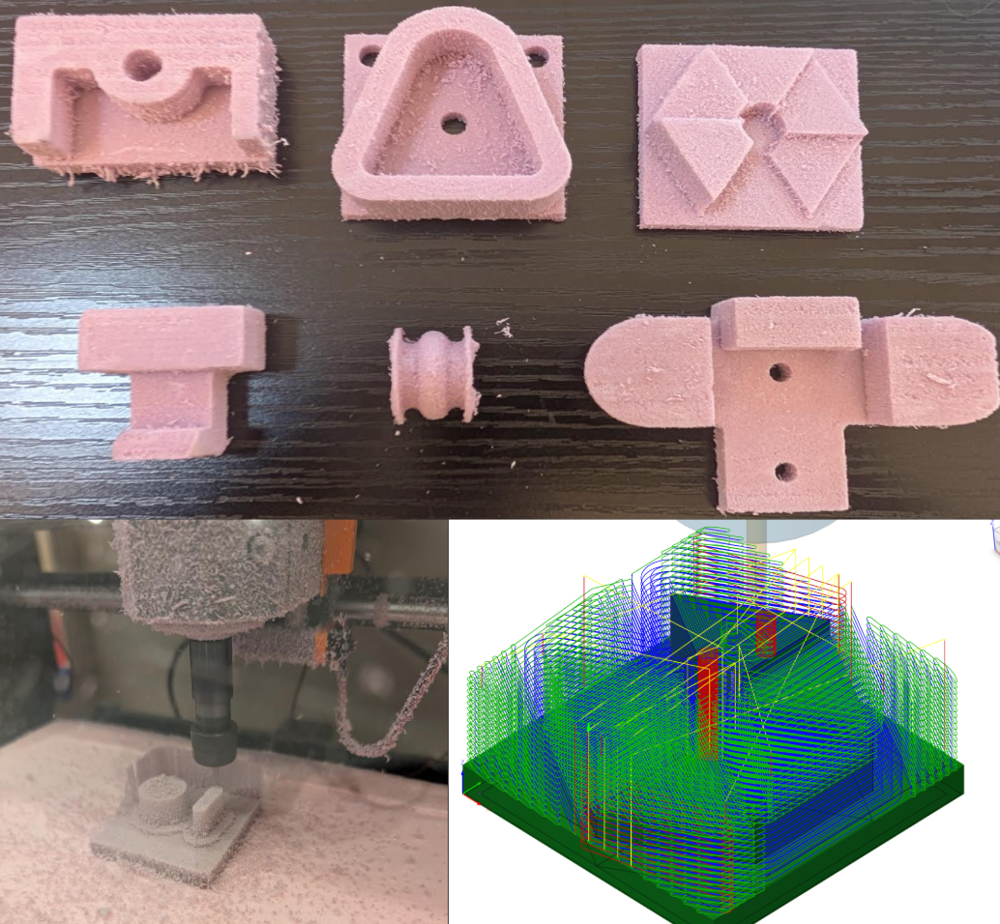
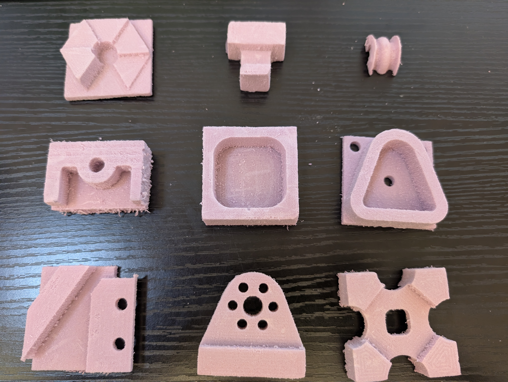
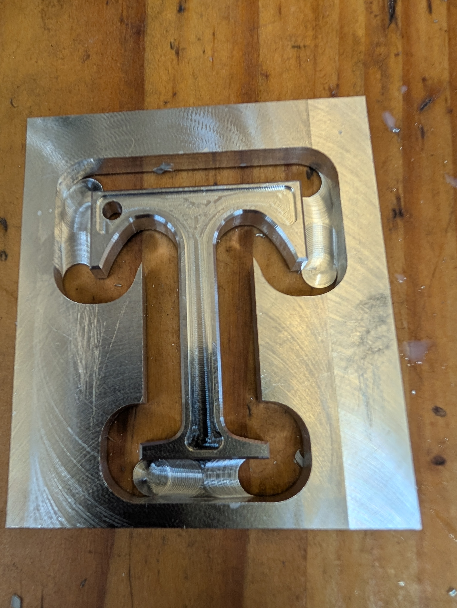
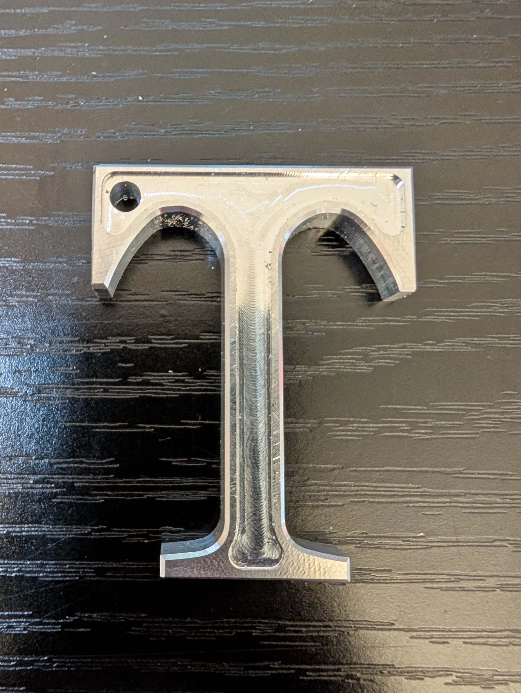
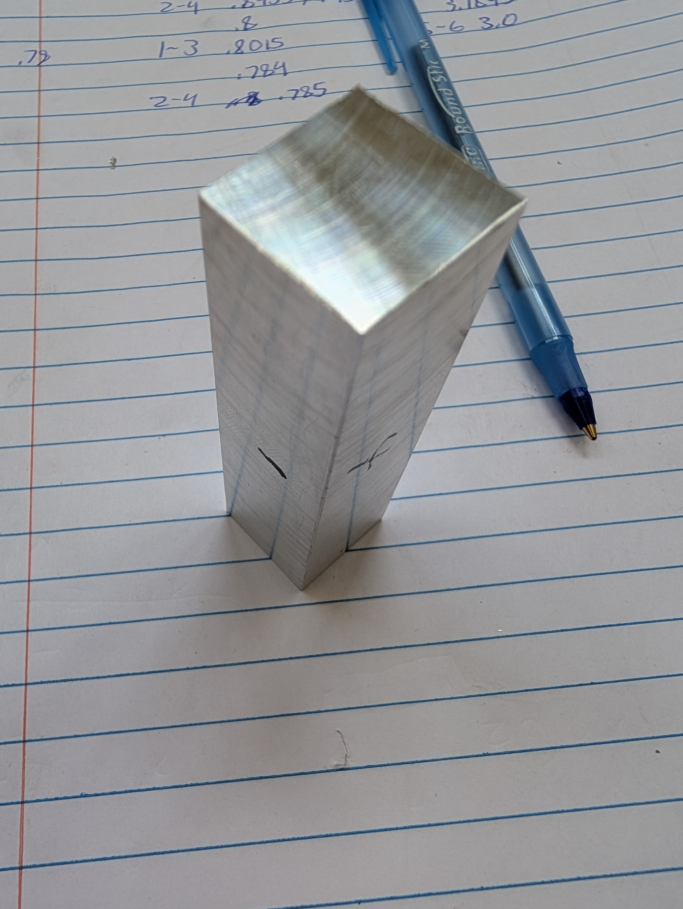
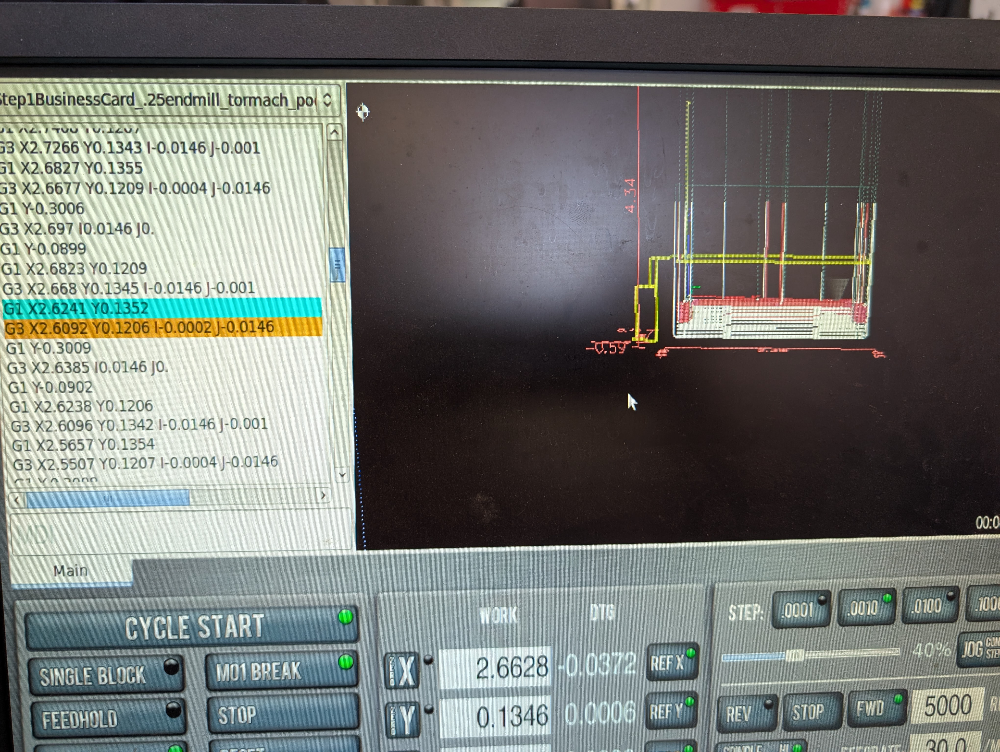
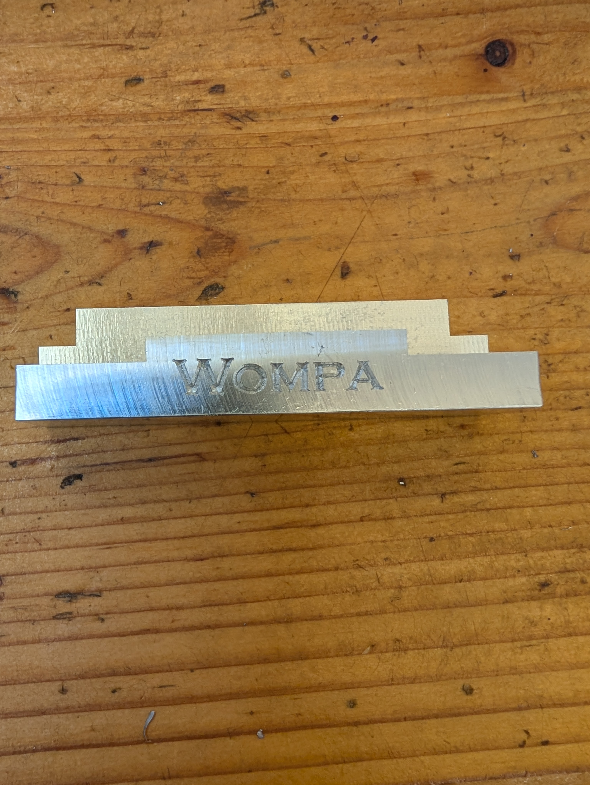
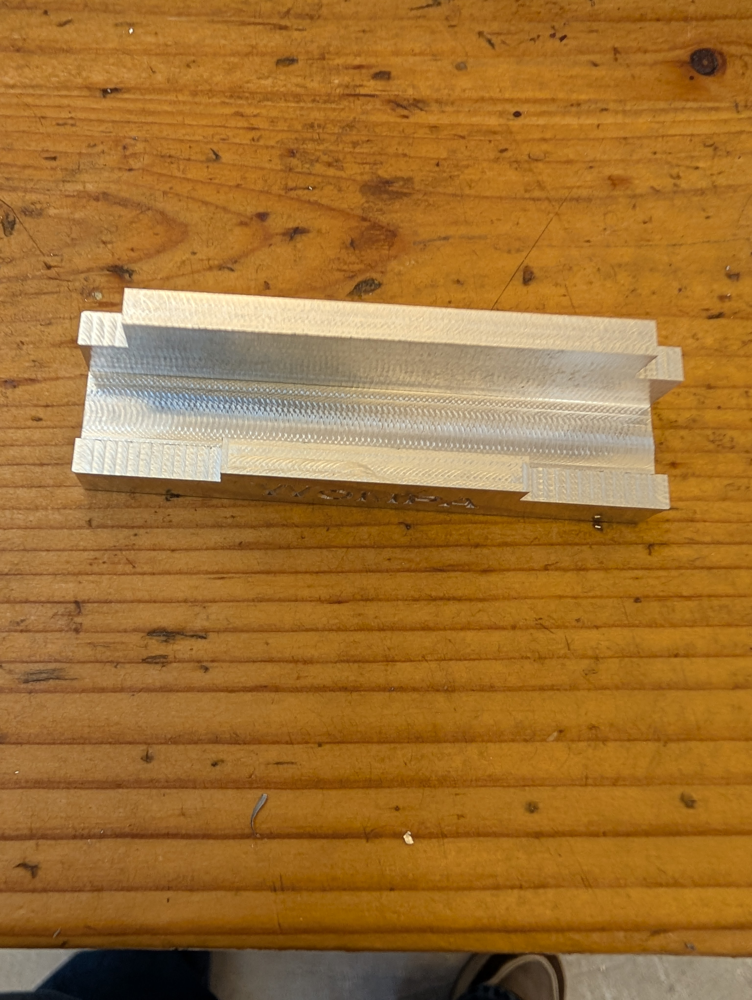

CNC
From digital designs to physical objects using CAM and CNC.
About The Project
This highlights projects created with an automated Genmitsu CNC router. It demonstrates the full workflow from CAD design and CAM toolpathing in Fusion 360 to a finished product. A key takeaway from the CNC work was learning to troubleshoot real-world issues, like securing stock properly and recovering a job after a runtime error.
Project Gallery


About The Project
A Tormach CNC carved piece of aluminum stock. This process involved CAD design of the letter and CAM toolpaths and a chamfer, involving tool switching between operations. Added a ⅛ inch groove indentation pocket with an end mill to the center and a .02 chamfer edge to it. Finally, I used a vertical band saw, sander, and filed to remove the tabs.
Project Gallery



About The Project
I faced the rectangular stock on all sides, rotating it against the stationary vise once a side was faced. I managed to get a perfect 3 inch length with the manual mill as measured with a micrometer. After, I designed the holder in CAD/CAM and ran it on the tormach with a ¼ inch end mill, rotating it with a vise stop and engraved it using a ¼ inch chamfer/engraving end mill.
Project Gallery



